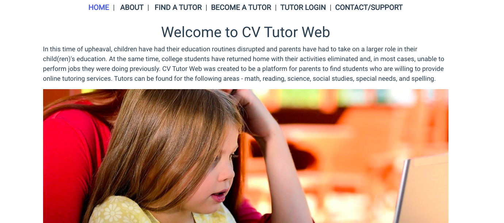
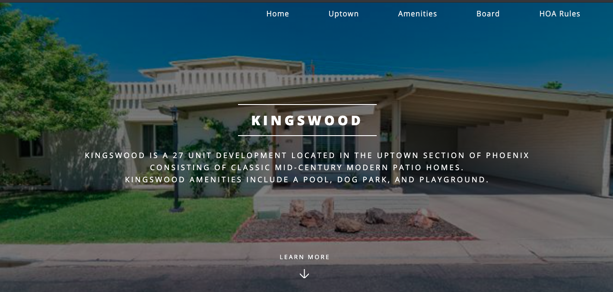

Projects
CV Tutor
CV Tutor is a web application designed to match collegiate tutors with students in grades K-8. It was built with a Ruby/Rails/SQL backend including password protection and authentication and a Vue.js front-end.
Rochester NH Democrats
Rebuilt the website for the Rochester, NH Democrats from scratch. Includes calendar and contact functionality.
Kingswood Home Owners Association
Created website for this Phoenix community's Home Owners Assoiation.